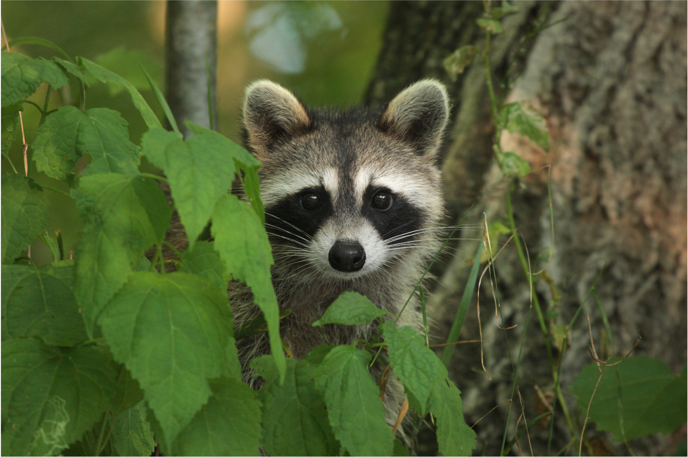
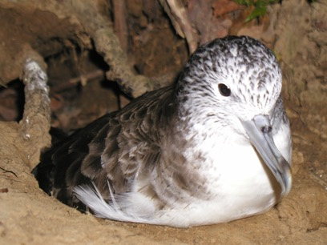
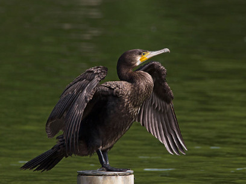

メンバー
- 准教授 山本真希 -
長岡技術科学大学の准教授として地域の獣害対策に関わる傍ら、2011年に獣害対策の支援団体（現NPO法人新潟ワイルドライフリサーチ）を設立。 また2015年より、一般社団法人ふるさとけものネットワークの代表として、獣害対策のプロをつくる「けもの塾 」も主宰している。 科学的アプローチと、培ってきた現場力を武器に「野生動物と人間の共存」を目指して活動中。
専門は 行動生理学、生態学、野生動物管理学。所属学会は日本鳥学会、日本生態学会、日本哺乳類学会、応用生態工学会、日本バイオロギング研究会。 これまで北海道天売島、南極大陸、粟島浦村、南魚沼市、魚沼市、十日町市、長岡市、新潟市、阿賀町などで海鳥の生態に関するフィールド調査を行った。最近は県内で多発する里山の野生鳥獣被害対策に関する研究も行っている。
< 略歴 >
- 平成2年3月 千葉県立千葉高等学校卒業
- 平成9年3月 東京大学大学院 農学生命科学研究科 水圏生物科学専攻 修士課程修了
- 平成7年3月 早稲田大学 教育学部 理学科 生物学専修卒業
- 平成13年3月 総合研究大学院大学大学院 数物科学研究科 極域科学専攻 博士課程修了
- 平成13年4月～ 平成19年3月 新潟県立長岡高等学校 理科教諭
- 平成19年4月～ 長岡技術科学大学工学部 生物系 助教
- 平成25年2月～ 長岡技術科学大学工学部 生物系 准教授
- 平成27年4月～ 長岡技術科学大学工学研究科 技学研究院 生物工学機能専攻 准教授
研究概要
-

- 市民参加型アライグマ調査 -
特定外来生物・アライグマは生態系、特に両生・爬虫類に大きな影響を与えることが知られている。新潟県でも糸魚川・上越市での捕獲の記録が確認されており、分布の拡大が懸念されている。将来のアライグマ被害を無くすためにも、アライグマの分布を調査する必要があるといえる。
アライグマの分布調査には、アライグマが”ねぐら”として利用する神社仏閣に付く爪痕を探して調査する手法、「神社仏閣調査」が用いられる。この調査はスマートフォンがあれば誰でも簡単に調査に参加することができる。
そのため、是非とも多くの皆様と一緒に新潟県のアライグマの分布を調査していきたいと考える。
調査に参加する
-

- 鳥獣対策 -
野生鳥獣による食害を防ぐためには、追い払いや防除器具の設置などに多くの労働力が必要だが、里山の過疎化、高齢化のため、労働力の確保が大変難しい。野生鳥獣による被害で収穫ができず、耕作を放棄する農家も増え、里山の過疎化に拍車をかけている。そこで、本研究室では、里山の労働力不足を工学技術で補うことで野生鳥獣と人間の共存するシステムを作り出すための技術開発を行っている。
-

- カワウ -
カワウは、古くから日本に生息していた魚食性の水鳥である。1970年代に農薬の生物濃縮による影響や河川干潟の改修などによる環境悪化によって全国で3000羽まで個体数が激減した。ところが、1990年以降、農薬の改善によって個体数が増え始め、全国の内水面漁業への被害や巣を作った樹木が枯死することによる植生被害などが問題となっている。本研究室では、カワウの個体群管理方法、内水面漁業の被害対策技術の確立、河川内でカワウの捕食を忌避できる漁礁の効果等の研究を行っている。
論文一覧
アクセス
-
〒940-2188
新潟県長岡市上富岡町1603-1TEL 0258-46-6000（代表）
e-Mail umiushi@vos.nagaokaut.ac.jp
Facebook

-